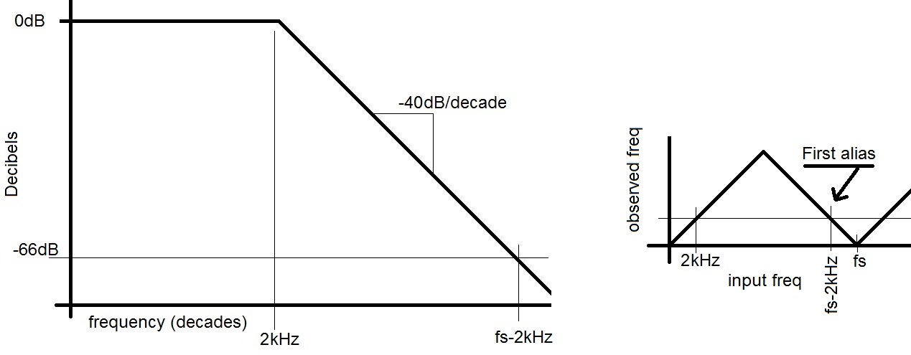
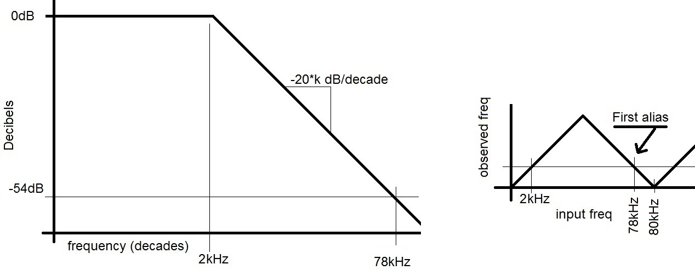

| Lecture: | 23 |
| Objective: | Design antialias filter using sampling frequency,
ADC resolution, signal of interest and filter order.
|
Analog to Digital Conversion
Antialias filters
- Sampling frequency:
Given:
- Signal of interest is 0-2kHz
- 2ond order filter
- 10-bit ADC
What is the minimum sampling rate?
The antialias filter needs to reduced the lowest frequency alias of 2kHz below 1/2 LSB of its full scale value in order to make it undetectable to the ADC. In the case of a 10-bit ADC this means that the filter needs to reduce the first alias to 20*log(2-11) = -66bB. Since the corner frequency is set to 2kHz, the first alias must be reduced -66dB. For a second order filter with a total attenuation of -40dB/decade this is:
-40dB -66dB
---------- = ---------
1 decade x decades
x = 1.65 decades above 2kHz. Now we have:
log10 ((fs-2kHz)/2kHz) = 1.65
Solving yields fs = 87kHz.

- Filter specs:
Given:
- Signal of interest is 0-2kHz
- 8-bit ADC
- Maximum possible sampling rate of 80kHz
What order filter do we need?
The antialias filter needs to reduced the lowest frequency alias to 1/2 LSB of its full scale value in order to make it undetectable to the ADC. In the case of a 8-bit ADC this means that the filter needs to reduce the first alias to 20*log(2-9) = -54bB. Since the corner frequency of the filter is set to 2kHz, first alias at 80kHz - 2kHz must be reduced -54dB. The filter can attenuate the signal over a range of 2k to 78k. This works out to:
log10(78kHz/2kHz) = 1.6 decades
We will call the unknown order of the filter "k". Hence this filter with a total attenuation of -20*k dB/decade.
-20*k dB -54dB
---------- = ---------
1 decade 1.6 decades
-20*k = 33.75 or k=1.69. Since the order of a filter must be an integer, we need to round up in order to ensure that the resulting attenuation is more than we need. Hence the filter must be second order.

- Signal bandwidth:
Given:
- 16-bit ADC
- 4th order filter
- Sampling frequency 250kHz
What is the maximum frequency of the signal of interest?
The antialias filter needs to reduced the first alias to 1/2 LSB of its full scale value in order to make it undetectable to the ADC. In the case of a 16-bit ADC this means that the filter needs to reduce the first alias to 20*log(2-17) = -102bB. For a 4th order filter with a total attenuation of -80dB/decade this is:
-80dB -102dB
---------- = ---------
1 decade x decades
x = 1.28 decades.
Since the maximum frequency of the signal of interest is unknown, we will call it "x". Since the sampling rate is set to 250kHz, our filter has 1.28 decades to attenuate the first aliasing frequency of 250kHz - x down by 106dB so that when it is sampled and aliased as a x kHz signal it is not detectable by the ADC. In other words:
log10 ((250kHz - x)/x) = 1.28 decades
250kHz = 20*x
x = 12.5kHz

Test your understanding
You can find the solutions embedded in the "source code" for this
web page by right mouse clicking on this web page and selecting
"view source". The solutions are in HTML comments.
- Sampling frequency:
Given:
- Signal of interest is 0-2kHz
- 1st order filter
- 10-bit ADC
What is the minimum sampling rate?
- You want to know how much bandwidth your sampling system can accommodate.
Your sampling system uses a16-bit ADC with a sampling frequency of 250kHz.
You are using a 4th order low pass filter. What is the maximum frequency
of the signal of interest?
- You are to design a sampling system using the following specifications.
The signal of interest is from 0-2kHz, passes through a third order filter
and sampled at 48kHz. How many bits of accuracy can you expect from the ADC?
- You are to design a low pass filter using the following specifications.
The signal of interest is from 0-2kHz and sampled using an 8-bit ADC. The
sampling rate of your system is 48kHz. What order filter do you need for
this application?